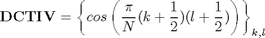
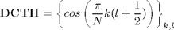
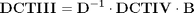
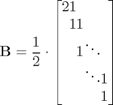
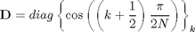
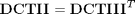
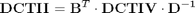

Relations between DCT_IV and DCT_II
Contents
Definitions
Result of transform is y=x*T, where y, x are row-vectors T is transform matrix
DCT_IV matrix definition

N=8; DCT4=cos(pi/N*((0:N-1)+1/2)'*((0:N-1)+1/2))
DCT4 =
0.9952 0.9569 0.8819 0.7730 0.6344 0.4714 0.2903 0.0980
0.9569 0.6344 0.0980 -0.4714 -0.8819 -0.9952 -0.7730 -0.2903
0.8819 0.0980 -0.7730 -0.9569 -0.2903 0.6344 0.9952 0.4714
0.7730 -0.4714 -0.9569 0.0980 0.9952 0.2903 -0.8819 -0.6344
0.6344 -0.8819 -0.2903 0.9952 -0.0980 -0.9569 0.4714 0.7730
0.4714 -0.9952 0.6344 0.2903 -0.9569 0.7730 0.0980 -0.8819
0.2903 -0.7730 0.9952 -0.8819 0.4714 0.0980 -0.6344 0.9569
0.0980 -0.2903 0.4714 -0.6344 0.7730 -0.8819 0.9569 -0.9952
DCT_II matrix definition

DCT2=cos(pi/N*(0:N-1)'*((0:N-1)+1/2))
DCT2 =
1.0000 1.0000 1.0000 1.0000 1.0000 1.0000 1.0000 1.0000
0.9808 0.8315 0.5556 0.1951 -0.1951 -0.5556 -0.8315 -0.9808
0.9239 0.3827 -0.3827 -0.9239 -0.9239 -0.3827 0.3827 0.9239
0.8315 -0.1951 -0.9808 -0.5556 0.5556 0.9808 0.1951 -0.8315
0.7071 -0.7071 -0.7071 0.7071 0.7071 -0.7071 -0.7071 0.7071
0.5556 -0.9808 0.1951 0.8315 -0.8315 -0.1951 0.9808 -0.5556
0.3827 -0.9239 0.9239 -0.3827 -0.3827 0.9239 -0.9239 0.3827
0.1951 -0.5556 0.8315 -0.9808 0.9808 -0.8315 0.5556 -0.1951
Finding relations
We use already derived relation between DCTIII and DCTIV matrices

where


By using transposition relation between DCTII and DCTIII matrices [1]

we can express matrix of DCTII transform through DCTIV transform matrix

B=diag(ones(1,N))+diag(ones(1,N-1),1); B(1,1)=2; B=B/2; D=diag(cos(pi/2/N*([0:N-1]+1/2)));
Check expression of DCT_II through DCT_IV
Check DCTII matrix
B'*DCT4*inv(D)
ans =
1.0000 1.0000 1.0000 1.0000 1.0000 1.0000 1.0000 1.0000
0.9808 0.8315 0.5556 0.1951 -0.1951 -0.5556 -0.8315 -0.9808
0.9239 0.3827 -0.3827 -0.9239 -0.9239 -0.3827 0.3827 0.9239
0.8315 -0.1951 -0.9808 -0.5556 0.5556 0.9808 0.1951 -0.8315
0.7071 -0.7071 -0.7071 0.7071 0.7071 -0.7071 -0.7071 0.7071
0.5556 -0.9808 0.1951 0.8315 -0.8315 -0.1951 0.9808 -0.5556
0.3827 -0.9239 0.9239 -0.3827 -0.3827 0.9239 -0.9239 0.3827
0.1951 -0.5556 0.8315 -0.9808 0.9808 -0.8315 0.5556 -0.1951
Check computation of DCTII transform
x=randn(1,N); y=x*DCT2 % true result y1=x*B'*DCT4*inv(D) % compute DCTII using DCTIV transform
y = -1.8560 3.4999 -3.6115 0.0491 -2.1580 -1.7128 -1.2828 -1.2811 y1 = -1.8560 3.4999 -3.6115 0.0491 -2.1580 -1.7128 -1.2828 -1.2811
Check expression of DCT_IV through DCT_II
inv(B')*DCT2*D
ans =
0.9952 0.9569 0.8819 0.7730 0.6344 0.4714 0.2903 0.0980
0.9569 0.6344 0.0980 -0.4714 -0.8819 -0.9952 -0.7730 -0.2903
0.8819 0.0980 -0.7730 -0.9569 -0.2903 0.6344 0.9952 0.4714
0.7730 -0.4714 -0.9569 0.0980 0.9952 0.2903 -0.8819 -0.6344
0.6344 -0.8819 -0.2903 0.9952 -0.0980 -0.9569 0.4714 0.7730
0.4714 -0.9952 0.6344 0.2903 -0.9569 0.7730 0.0980 -0.8819
0.2903 -0.7730 0.9952 -0.8819 0.4714 0.0980 -0.6344 0.9569
0.0980 -0.2903 0.4714 -0.6344 0.7730 -0.8819 0.9569 -0.9952
Check computation of DCTIV transform
y=x*DCT4 % true result y1=x*inv(B')*DCT2*D % compute DCTIV using DCTIII transform
y = -1.4464 2.6925 -4.0927 0.4043 -2.8514 -0.0030 -0.8452 0.3952 y1 = -1.4464 2.6925 -4.0927 0.4043 -2.8514 -0.0030 -0.8452 0.3952
Reference
[1] Markus Pueschel, Jose M.F. Moura. The Algebraic Approach to the Discrete Cosine and Sine Transforms and their Fast Algorithms SIAM Journal of Computing 2003, Vol. 32, No. 5, pp. 1280-1316.